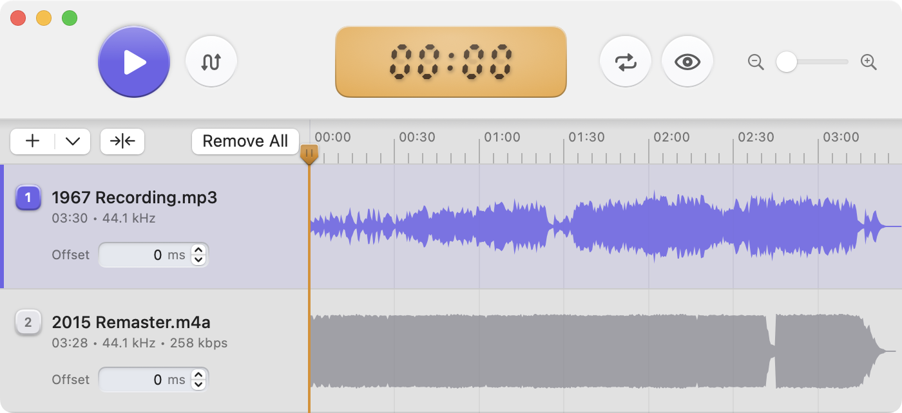

1
Compare up to 32 tracks
Songs stay synced during playback while you toggle between them to hear differences.
Compare multiple mixes of a song to find your favorite take.

Songs stay synced during playback while you toggle between them to hear differences.
Loop the exact section you care about so small differences in arrangement, mix, or mastering are easier to hear.
Randomize order and hide track details to listen without bias. Reveal track names after you pick a take.
Automatically line up different recordings with a single click.
Designed for macOS with a polished native interface and full light and dark mode support.
Keep your workflow moving with quick open from Finder and Apple Music, drag and drop support, and full keyboard shortcuts.
No. Takes is for local file playback only. Bring your own audio files and compare them side by side in the app.
Takes is free and open source. You can download it, use it, and inspect the code on GitHub.
I built Takes to scratch my own itch. I love hearing the differences between original releases and remasters, and I've always wanted an app that lets me listen and toggle between them. I built a small utility, then decided to turn it into a polished app because I love old school native apps that sweat the details. I'm sharing it in case others find it useful too.
Just the help section below.
+ menu above the track list for Quick Open from Apple Music.Drag or Shift Click in the timeline area to constrain playback to the selected range. Use it to focus on a specific passage and loop across tracks.
Blind Listening Mode is for comparing takes without knowing which source file is which. It hides names and metadata, anonymizes the waveforms, and shuffles the track order.
Auto-Align listens to the audio itself and computes per-track offsets so similar sections line up. The quick pass compares audio-change patterns and only accepts confident matches, which helps it avoid false positives when files are unrelated or too ambiguous.